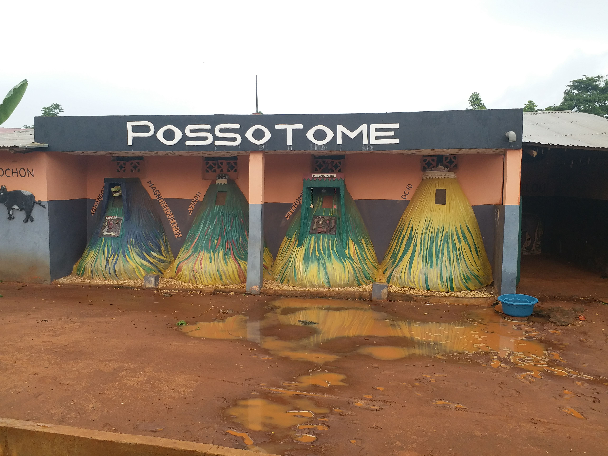

Cultural life
Celebrations that define Possotomè
Two events above all others mark the rhythm of life in Possotomè, one ancient, one reborn, both deeply rooted in the community's identity.
The Festival Awilé

What is Awilé? In the rich tapestry of Beninese spirituality, Awilé is a powerful goddess associated with Lake Ahémé. She is revered as a protector of the community, a guardian of the waters and a symbol of renewal and harmony. The festival that bears her name is not just a celebration, it is a profound expression of the relationship between the people of Possotomè and the natural world that sustains them. Awilé is a grand ceremony and one of the greatest treasures of Beninese cultural heritage. It marks the opening of a new year of peace and serenity, a moment for communities to rise above their quarrels, leave their suffering behind and begin again together. The celebration begins the evening before, when the dances and songs of Zandro fill the air, announcing what is to come.
Historians trace this ceremony as one of the ancestors of South American carnivals, its rhythms and dances carried across the Atlantic by enslaved people who kept the tradition alive in Brazil, Haiti and Trinidad.
The Royal Ceremony of January

Every year on January 10th, Benin celebrates the National Vodun Festival. In Possotomè, this date takes on a deeply local dimension, King Ayolomi Laté organises a royal ceremony that brings together the ten villages in a celebration of ancestral spirituality, community bonds and cultural pride.
The ceremony is held in a deferred form, giving each village the time to honour the occasion in its own way before joining the collective gathering under the king's authority.